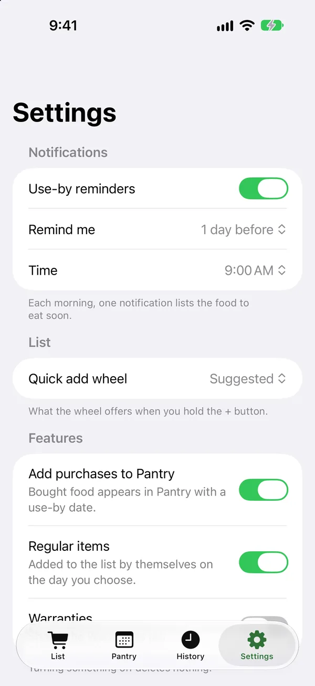
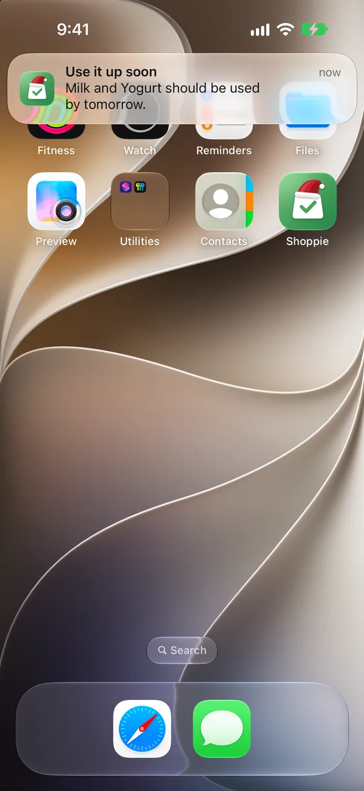

How to set a morning reminder of what to eat
-
Step 1 Turn on Use-by reminders
On the Settings tab, under Notifications, turn on Use-by reminders. If notifications are blocked, tap Allow notifications in iPhone Settings.

-
Step 2 Choose when and what time
In Remind me, choose On the day or 1, 2, 3 or 7 days before (default 1 day). In Time, pick an hour between 6:00 and 21:00 (default 9:00).
-
Step 3 One notification in the morning
At the chosen time you get a Use it up soon notification listing the food to eat first.

Frequently asked questions
Why am I not getting reminders?
Check that notifications are allowed for Shoppie, that the food has a best-before date, and that a Focus mode isn’t hiding them.
Does Shoppie send notifications from a server?
No. Reminders are scheduled by your iPhone itself; we don’t send any push notifications.
More questions are answered on the Support page.